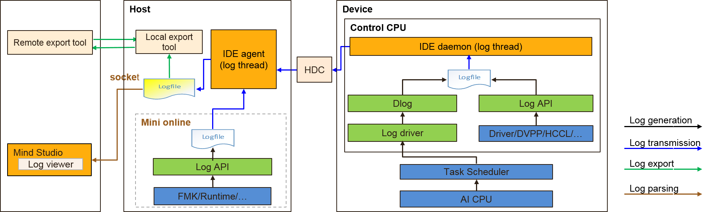

Log Analysis
Mind Studio provides a system-wide log collection and analysis solution for the NPU platform, improving the efficiency of locating runtime algorithm problems. A unified log format is adopted. Visualized analysis of cross-platform logs and runtime diagnosis runs in Web mode, improving the usability of the log analysis system.
Figure 1 shows the principle of log analysis of Mind Studio.
Figure 1 Principle diagram of log analysis

- The device generates log and transfers log through the HDC channel.
- The host dumps and compresses logs.
- Mind Studio parses and displays logs.
- Logs stored on the host can be exported.
Currently, logs of the following modules are supported: Dlog, Slog, IDE-daemon-host, IDE-daemon-device, Log-agent-host, HCCL, Framework, HiAI Engine, DVPP, Runtime, CCE, HDC, Driver, MDC, DEVMM, and Kernel.
- Slog: system logs
- HiAI Engine: model
- HCCL: Huawei collection communication library, which provides APIs for operations such as reduce and gather
- MDC: self-driving, including regulation control, space perception, monitoring, and positioning
- DEVMM: device memory management
- Kernel: system kernel
Logs reported by each module are displayed in the IDE in a centralized manner.
Output logs can be filtered by module, time, log type, and keyword. You can import offline logs for analysis. You can also export unfiltered logs and filtered logs.
Figure 2 shows the log analysis result.